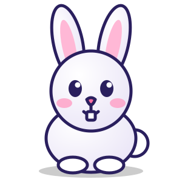

✦ ТВОЁ ПЕРВОЕ ПРИКЛЮЧЕНИЕАрабский язык —
Арабский язык —
это интересно!
Знакомься с буквами, открывай красивые слова и играй вместе с Али. Маленький шаг каждый день — большое открытие!
ا 28 арабских букв♡ 0 уже знакомы★ 0 звёзд
Мархаба!Это значит «привет» по-арабски.مَرْحَبًا

ا✦✍28 буквот алифа до йа
☷Первые словас картинками
★Весёлые игрыиграй и собирай звёзды
♡В своём темпебез спешки
ТВОЯ КАРТА ПРИКЛЮЧЕНИЯ
С чего начнём?
Выбирай занятие — Али будет рядом.
♡
Здесь можно учиться в своём темпе
Ошибки — часть путешествия. Пробуй снова и радуйся каждому новому слову.
ШАГ ЗА ШАГОМ
Знакомимся с буквами
Посмотри на букву, послушай её и познакомься со словом.
БУКВА 1 ИЗ 28○ Ещё учим
ا
Алиф
Первая буква арабского алфавита
🐇
СЛОВО-ПРИМЕРأَرْنَبкроликарнаб
ВЕСЬ АЛФАВИТ
Выбери любую букву
МАЛЕНЬКИЕ СЛОВА — БОЛЬШИЕ ОТКРЫТИЯ
Собираем словарик
Нажми на карточку, чтобы услышать арабское слово.
ВРЕМЯ ИГРАТЬ
Проверим память?
Выбери правильный ответ и собирай звёзды. Можно ошибаться и пробовать снова.
ВОПРОС 1 ИЗ 8★ 0
🐇Что значит это слово?
أَرْنَب
ТВОИ УСПЕХИ
Смотри, сколько ты узнал!
Прогресс сохраняется на этом устройстве.
ТВОЁ ПРИКЛЮЧЕНИЕ
Каждая буква — маленькая победа.
Продолжай исследовать арабский язык и отмечай то, что уже знаешь.
ا ب ت0 / 28букв знакомо
★0звёзд собрано
🎮0вопросов решено